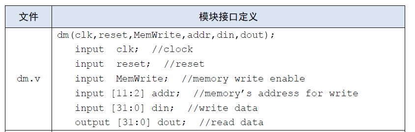

CPU 设计文档 - P4
设计方案 - 各模块端口定义及功能说明
GRF
端口说明
| 信号名 | 方向 | |
|---|---|---|
| clk | I | 时钟信号. |
| reset | I | 同步复位信号. |
| reg1 [4:0] | I | 指定寄存器的 5 位地址，将目标寄存器的数据读出到 read1. |
| reg2 [4:0] | I | 指定寄存器的 5 位地址，将目标寄存器的数据读出到 read2. |
| RegWrite | I | GRF 写入使能信号：有效时允许向 GRF 中写入. |
| RegAddr [4:0] | I | GRF 写入目标寄存器的 5 位地址. |
| RedData [31:0] | I | GRF 写入的 32 位数据. |
| read1 [31:0] | O | 输出 Reg1 指定的寄存器中的 32 位数据. |
| read2 [31:0] | O | 输出 Reg2 指定的寄存器中的 32 位数据. |
功能规定
- 同步复位：reset 信号有效时，在 clk 上升沿将所有寄存器复位为0.
- 读取数据：Reg1 和 Reg2 信号可指定两个寄存器地址并读取其中数据，并通过端口 read1 , read2 输出。
- 储存数据：当写入使能信号 RegWrite 有效时，RedData 输入的数据将在时钟信号上升沿时写入到 RegAddr 指定的寄存器中。
ALU
端口说明
| 信号名 | 方向 | |
|---|---|---|
| a [31:0] | I | 进行逻辑运算的第一个 32 位操作数. |
| b [31:0] | I | 进行逻辑运算的第二个 32 位操作数. |
| Shamt [4:0] | I | 当前指令的 Shamt 字段. |
| ALUoperation [3:0] | I | 由 ALU 控制单元输出的，指明 ALU 的运算类型. 详见功能规定 |
| Judge [1:0] | O | 表示输入的两个操作数的大小关系：00 : 相等；01 : a < b；11 : a > b. |
| Result [31:0] | O | 输出逻辑运算后的 32 位结果. |
功能规定
- 根据ALU控制单元输出的ALUoperation信号对两个32位数据A、B进行算术逻辑运算。
| ALUoperation [3:0] | 功能 |
|---|---|
0000 |
执行+运算 |
0001 |
执行-运算 |
0010 |
执行&运算 |
0011 |
执行\|运算 |
0100 |
执行加载至高位lui运算 |
0101 |
执行逻辑左移sll运算 |
0110 |
执行逻辑右移srl运算 |
0111 |
执行算术右移sra运算 |
IFU
端口说明
| 信号名 | 方向 | |
|---|---|---|
| clk | I | 时钟信号. |
| reset | I | 同步复位信号. |
| Branch [1:0] | I | Controller 输出的跳转类型. 详见功能规定 |
| Judge [1:0] | I | ALU 输出的判断值. |
| Imm [31:0] | I | 经过符号扩展的 32 位立即数. |
| ra [31:0] | I | 寄存器 $ra 的值. |
| Instruction [31:0] | O | 当前的 32 位指令码. |
注意：此处有误！IFU 模块内输入端口 ra 本意是执行指令jr $ra时可以直接读取并跳转到寄存器 $ra 指向的地址。但是，jr指令并不一定仅使用寄存器 $ra,因此此处应该输入地址 rs 对应的寄存器中的值。
可以说，这是本人 P4 上机寄寄的原因，用了一个多小时才找到这个 bug，遗憾只做了两道题。
功能规定
- 内部包括 PC、IM 及相关逻辑。
- 通过相关逻辑将程序计数器与 ROM 地址联系起来。
- 可以根据 Controller 输出的 Branch 控制信号、ALU 输出的 Judge 判断结果执行跳转指令。
| Branch [1:0] | 跳转类型 | 指令示例 |
|---|---|---|
00 |
不跳转. | \ |
01 |
跳转到 Imm 指定的偏移量. | beq |
10 |
跳转到 Imm 指定的地址. | jal |
11 |
跳转到寄存器 $ra 指定的地址. | jr |
DM
端口说明
| 信号名 | 方向 | |
|---|---|---|
| clk | I | 时钟信号. |
| reset | I | 异步复位信号. |
| MemWrite | I | 写入使能信号:0 : 不允许向 RAM 中写入数据;1 : 允许向 RAM 中写入数据. |
| MemRead | I | 读取使能信号0 : 不读取 RAM 中数据;1 : 读取 RAM 中数据. |
| Address [31:0] | I | ALU 输出的 32 位信号，当使能信号有效时作为数据读写的地址. |
| WriteData [31:0] | I | 使能信号有效时，要写入 RAM 中的 32 位数据. |
| ReadData [31:0] | O | 使能信号有效时，从 RAM 读取到的 32 位数据. |
功能规定
- 可以根据 Controller 输出的 MemRead、MemWrite 控制信号，对数据存储器 DM 进行读写。
Controller
端口说明
| 信号名 | 方向 | |
|---|---|---|
| OpCode [5:0] | I | 指令的 OpCode 字段. |
| Func [5:0] | I | 指令的 Func 字段. |
| ALUop [3:0] | O | 指明 ALU 的运算类型. 详见功能规定 - ALUop |
| ALUSrc [1:0] | O | 决定 ALU 输入端 B 数据来源:00 : 选择 GRF 输出 read2(rt 寄存器);01 : 选择 zeroext 输出;10 : 选择 signext 输出. |
| Branch [1:0] | O | 决定跳转类型. 详见功能规定 - Branch |
| MemWrite | O | DM 写入使能信号. |
| MemRead | O | DM 读取使能信号. |
| RegWrite | O | GRF 写入使能信号. |
| RegDst [1:0] | O | 决定寄存器堆写入端地址:00 : 选择 rt 字段;01 : 选择 rd 字段;10 : 选择寄存器 $ra. |
| MemtoReg [1:0] | O | 决定寄存器堆写入端数据来源:00 : 来自 ALU 输出;01 : 来自 DM 输出;10 : 来自 IFU 输出. |
| MemtoDM | O | 决定内存写入端数据来源:0 : 寄存器 rt 的值. |
思考题
1 . 阅读下面给出的 DM 的输入示例中（示例 DM 容量为 4KB，即 32bit × 1024字），根据你的理解回答，这个 addr 信号又是从哪里来的？地址信号 addr 位数为什么是 [11:2] 而不是 [9:0] ？ 
addr 表示内存 DM 读写的地址，其来源于 ALU 模块的输出信号。其位宽采用 [11:2] 而非 [9:0] 是因为在 CPU 指令中，地址采用字节寻址，二我们设计的内存是由多个 32 位寄存器组成的，四字节为一字，故要忽略后两位。
2 . 思考上述两种控制器设计的译码方式，给出代码示例，并尝试对比各方式的优劣。
...可以记录下指令对应的控制信号如何取值，也可以记录下控制信号每种取值所对应的指令，在后面的 Project 中，这两种不同的译码方式将展现出各自的优劣...
代码示例：
指令：
if(OpCode==6'b000000)
begin
MemWrite<=0;
MemRead<=0;
MemtoDM<=0;//
if(Func==6'b000000)//sll
begin
Branch<=0;
RegWrite<=1;
MemtoReg<=0;
ALUop<=4'b0101;
ALUSrc<=0;
RegDst<=1;
end else if(Func==6'b100000)//add
begin
//...
end
end else if(OpCode==6'b001101)//ori
begin
Branch<=0;
MemWrite<=0;
MemRead<=0;
//...
end
控制信号：
assign ALUOp = (add | lw | sw) ? 4'b0000 :
(subu) ? 4'b0001 :
(ori) ? 4'b0011 :
(lui) ? 4'b0100 : 4'b0000;
两种控制器设计方法各有优劣，根据指令设计控制信号可以更便捷的增删指令，而根据控制信号选择指令更容易把握指令功能，减少出错。
3 . 在相应的部件中，复位信号的设计都是同步复位，这与 P3 中的设计要求不同。请对比同步复位与异步复位这两种方式的 reset 信号与 clk 信号优先级的关系。
对于同步复位，clk的优先级更高；对于异步复位，reset优先级更高。
4 . C 语言是一种弱类型程序设计语言。C 语言中不对计算结果溢出进行处理，这意味着 C 语言要求程序员必须很清楚计算结果是否会导致溢出。因此，如果仅仅支持 C 语言，MIPS 指令的所有计算指令均可以忽略溢出。 请说明为什么在忽略溢出的前提下，addi 与 addiu 是等价的，add 与 addu 是等价的。提示：阅读《MIPS32® Architecture For Programmers Volume II: The MIPS32® Instruction Set》中相关指令的 Operation 部分。
根据指令描述，addi 与 addiu 的区别在于，addi 会记录 GPR[rs] 的最高位，在 + 运算结束后对最高位进行比较，如果最高位不同（即溢出）则会 SignalException(IntegerOverflow) 报错，但 addiu 不考虑这些。add 与 addu 同理。
测试方案
自编测试代码：
.text
ori $1,$1,20
ori $2,$2,10
add $3,$2,$1
sub $4,$1,$2
sw $4,($1)
lw $5,($1)
beq $4,$5,aaa
lui $6,6
aaa:
jal tag
add $7,$7,$2
tag:
beq $7,$1,end
jr $ra
end: